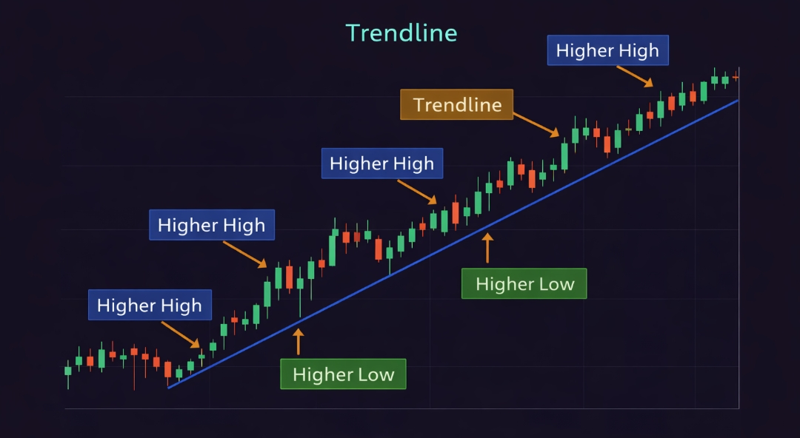
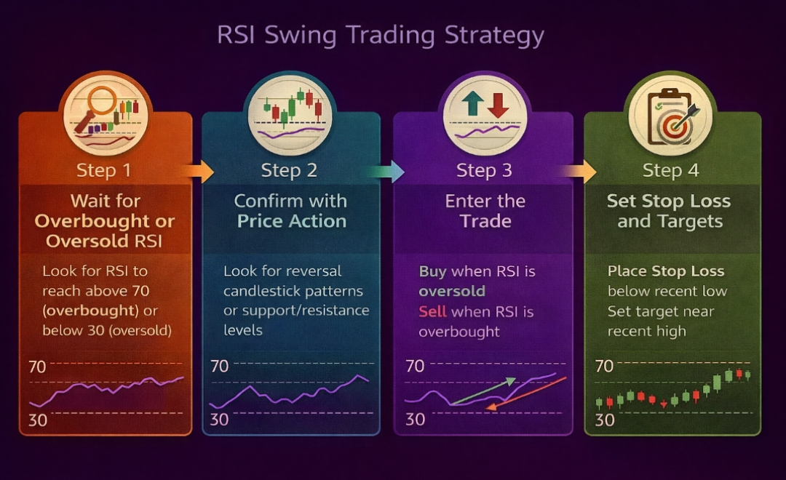

🌊 Swing Trading क्या है?
Swing trading एक trading style है जिसमें आप stocks या indexes को कुछ दिनों से लेकर कुछ हफ्तों तक hold करते हो और price के natural up-down (swings) से profit कमाते हो।
हर stock एक straight line में नहीं चलता। वह ऊपर जाता है, थोड़ा pullback लेता है, फिर ऊपर जाता है — या नीचे जाता है, थोड़ा bounce करता है, फिर नीचे जाता है। इन swings को पकड़ना ही swing trading है।

💡 Simple Analogy: सोचो market एक समुद्र है। Waves (swings) आती हैं और जाती हैं। Swing trader एक surfer की तरह है — वह wave शुरू होने पर ride करता है और wave peak पर exit करता है। वह हर छोटी लहर पर नहीं जाता (intraday), लेकिन हर wave का पूरा सफर करता है।
Swing Trading किसके लिए Perfect है?
- Working professionals जो market को हर minute नहीं देख सकते
- Students जिनके पास limited time है
- Beginners जो intraday pressure से बचना चाहते हैं
- Part-time traders जो side income बनाना चाहते हैं
- कोई भी जो roz screen से chipka नहीं रहना चाहता
📊 Swing vs Intraday vs Long-term — Full Comparison
तीनों styles में से कौन सा आपके लिए best है — यह table देखकर decide करो:
| Parameter | 🌊 Swing Trading | ⚡ Intraday | 📈 Long-term |
|---|---|---|---|
| Holding Period | 2 दिन – 4 हफ्ते | कुछ मिनट – 1 दिन | महीने – साल |
| Time Required Daily | 30–60 min | Full day attention | Minimal |
| Stress Level | Medium-Low | Very High | Low |
| Profit Per Trade | 5–20% | 0.5–2% | 50–200%+ (years) |
| Overnight Risk | ✅ होती है (manageable) | ❌ नहीं | ✅ होती है |
| Brokerage Fees | Low (कम trades) | High (बहुत trades) | Very Low |
| Best For | Part-timers, Beginners | Full-time traders | Investors |
✅ Verdict: Swing trading इन तीनों का best balance देती है — intraday जितना profit potential, long-term जितनी कम monitoring, और बीच का stress level। यही इसे beginners के लिए ideal बनाता है।
💰 Best Swing Trading Strategies — Detail में
Swing trading में success के लिए एक well-defined strategy होना जरूरी है। ये 4 strategies beginners से advanced traders तक सब use करते हैं।
"Trend is your friend" — यह trading की सबसे पुरानी और proven बात है। Swing trading में trend के direction में trade लेना सबसे high probability approach है।
Logic: जब कोई stock uptrend में होता है (higher highs, higher lows बना रहा है), तो इस trend के साथ buy trades लेना statistically winning approach है। Trend जितनी strong, उतना reliable।
- Daily chart पर trend identify करो — Higher Highs + Higher Lows = Uptrend
- 50 EMA या 200 EMA price के ऊपर हो → Bullish bias confirm
- Trend में correction (pullback) आने पर entry opportunity ढूंढो
- Pullback 50 EMA के पास आए और candlestick reversal pattern बने → Entry
- Stop Loss: Pullback का low (last swing low)
- Target: Previous high या Fibonacci extension levels
📍 Key Insight: Trend following में patience सबसे जरूरी है। अच्छा setup बनने का wait करो — forced entry से बचो। एक महीने में 2-3 perfect setups enough हैं।
Pullback का मतलब है — uptrend में temporarily नीचे आना। यह नई entry के लिए सबसे अच्छा opportunity होती है क्योंकि आप discounted price पर strong stock खरीदते हो।
Logic: अगर एक stock strong uptrend में है और थोड़ा correct करता है — यह weakness नहीं है, यह buying opportunity है। बड़े traders (institutions) यहीं accumulate करते हैं।
- Strong uptrend identify करो (strong fundamentals + technical)
- Pullback observe करो — 38.2% या 50% Fibonacci retracement level देखो
- Pullback key support या EMA पर आने पर candlestick signal wait करो
- Bullish engulfing, hammer, या morning star pattern पर entry
- Volume: Pullback में volume कम होनी चाहिए और bounce पर volume बढ़नी चाहिए
- Stop Loss: Pullback का recent low
- Target: Previous high का retest या नया high
जब stock एक consolidation zone या resistance level को strong volume के साथ break करता है, तो अक्सर एक बड़ा move आता है। Swing traders इसे capture करते हैं।
- Weekly chart पर strong resistance level identify करो (कई महीनों से होल्ड)
- Stock का breakout candle weekly closing basis पर confirm होना चाहिए
- Volume breakout week में average volume से 2x+ होनी चाहिए
- Entry: Breakout candle close के बाद या next day morning
- Retest entry: Breakout के बाद resistance पर pullback आए → safer entry
- Stop Loss: Breakout level के नीचे 3-5%
- Target: Previous swing high या measured move (pattern height)
⚠️ Fake Breakout Alert: हर breakout successful नहीं होता। Low volume breakout = weak signal। हमेशा weekly candle close confirm होने पर ही entry लो।
RSI (Relative Strength Index) swing trading का सबसे popular indicator है। Oversold stocks में value buy करना और overbought पर exit करना — यह simple और effective strategy है।
- Stock जो uptrend में है उसे watchlist में रखो
- RSI 30-40 zone में आए (oversold) → potential swing buy opportunity
- Candlestick reversal pattern wait करो support level पर
- RSI 30 cross करके ऊपर जाए + bullish candle → Entry signal
- Target: RSI 60-70 level (overbought zone)
- Stop Loss: Recent swing low के नीचे

📊 Best Indicators for Swing Trading
Swing trading में intraday से कम indicators की जरूरत होती है। Daily chart पर ये 4 indicators बहुत अच्छा काम करते हैं।
50 EMA & 200 EMA
Trend direction का सबसे reliable indicator। Price 50 EMA के ऊपर = uptrend। 50 EMA 200 EMA के ऊपर = strong bull market। EMA crossovers major signals देते हैं।
RSI (14 Period)
Momentum measure करता है। Swing trading में RSI 40-60 के बीच रहना healthy trend दिखाता है। 30 से नीचे = oversold buy opportunity। 70 से ऊपर = overbought exit signal।
MACD (12, 26, 9)
Trend change का early signal देता है। MACD bullish crossover + histogram positive होना = buy signal। Weekly chart पर MACD signals बहुत reliable होते हैं।
Volume
हर move को validate करता है। Breakout पर high volume = strong move। Pullback पर low volume = healthy correction। Volume confirmation के बिना कोई trade नहीं।

🎯 Perfect Combination: 50 EMA (trend) + RSI (momentum) + Volume (confirmation) — यह तीनों मिलकर swing trading का complete system बनाते हैं। बाकी सब optional है।
🔍 Swing Trading के लिए Stock Selection कैसे करें?
Swing trading में stock selection सबसे underrated skill है। Wrong stock में अच्छी strategy भी काम नहीं करती। ये criteria use करो:
| Criteria | What to Look For | Why Important |
|---|---|---|
| Liquidity | Average daily volume 5 lakh+ shares | Easy entry/exit, no slippage |
| Trend | 52-week high के पास या strong uptrend में | Trending stocks swing better |
| Relative Strength | NIFTY से better performance | Strong stocks lead the market |
| Sector | Outperforming sector के stocks | Sector rotation drives swings |
| Avoid | Penny stocks, illiquid stocks, F&O ban stocks | Risk बहुत ज्यादा होती है |
India में Popular Swing Trading Stocks (Examples):
- NIFTY 50 stocks: Reliance, HDFC Bank, Infosys, TCS, SBI, Tata Motors
- Midcap leaders: Persistent Systems, Voltas, Crompton, Havells
- Sector leaders: जो sector outperform कर रहा हो उसके top 2-3 stocks
- Avoid: SME stocks, penny stocks, highly volatile B-group stocks
⏱️ Swing Trading के लिए Best Timeframes
Multi-timeframe analysis swing trading में game-changer होती है। Top-down approach use करो:
Weekly Chart — Big Picture (Macro Trend)
पहले weekly chart देखो। Overall market direction क्या है? Stock major uptrend में है या downtrend? Weekly chart का trend ignore करके swing trade नहीं लेते।
Daily Chart — Trading Timeframe (Main Analysis)
Daily chart पर exact strategy apply करो। Support/resistance mark करो, EMA levels देखो, RSI check करो। यहीं से entry और exit plan बनाओ।
4-Hour Chart — Entry Timing (Fine-Tune)
Daily chart पर setup बन जाए तो 4H chart पर exact entry timing देखो। Candlestick pattern और volume यहाँ देखो। इससे entry और tight stop loss मिलता है।
🛡️ Swing Trading में Risk Management
Swing trades overnight रहती हैं — इसका मतलब है additional overnight risk। Gap down (stock बहुत नीचे open हो) या bad news के कारण अचानक बड़ा loss possible है। इसलिए risk management और जरूरी हो जाती है।
Position Size Carefully — Max 2% Risk Per Trade
Swing trade में overnight risk की वजह से position size conservative रखो। ₹1,00,000 capital पर एक trade में max ₹2,000 risk। एक साथ 3-5 से ज्यादा positions नहीं।
Stop Loss हमेशा Wider रखो
Intraday के tight SL की तरह swing में नहीं रख सकते। Daily chart पर natural support या swing low के नीचे SL रखो — 5-8% नीचे reasonable है। Tight SL = premature stop out।
Earnings / Results से पहले सावधान रहो
Quarterly results, budget announcements, RBI policy — इन events से पहले swing position hold करना risky होता है। या तो position reduce करो या results के बाद entry लो।
Trailing Stop Loss Use करो
जैसे trade profit में जाए, SL को breakeven पर move करो। फिर last swing low पर। इससे profit lock होता है और downside risk कम होती है।
Diversify — Same Sector में सब नहीं
3-5 open positions हों तो अलग-अलग sectors में रखो। एक sector की bad news सब positions को hit करेगी अगर सब same sector में हैं।
📊 Real Swing Trade Example — Step by Step
Theory समझ लिया — अब एक actual swing trade देखते हैं जो properly planned और executed हो:
- Step 1 – Weekly Analysis: HDFC Bank 3 महीने से uptrend में है। Weekly chart पर higher highs, higher lows बन रहे हैं।
- Step 2 – Daily Analysis: Stock ₹1,650 पर strong resistance था, जो 2 हफ्ते पहले break हुआ। अब pullback आ रहा है।
- Step 3 – Setup: Stock ₹1,650 (previous resistance = now support) पर आ गया। RSI 42 है (pullback zone)। Volume कम है (healthy correction)।
- Step 4 – Confirmation: Daily chart पर Bullish Engulfing candle ₹1,660 पर बनी। Volume average से 1.5x ज्यादा।
- Entry: ₹1,665 (next day morning)
- Stop Loss: ₹1,620 (swing low के नीचे) → Risk = ₹45 per share
- Target: ₹1,780 (previous high retest) → Reward = ₹115 per share
- RR Ratio: 1:2.5 ✅
- Result: 12 दिन बाद ₹1,780 hit। Exit। Profit per share ₹115।
✅ What made this trade work: Weekly trend aligned था। Pullback support पर confirmation मिली। Volume analysis किया। Entry, SL और Target पहले plan किए। Patience रखी — 12 दिन hold किया।
🧠 Swing Trading Psychology — Patience का Game
Swing trading का सबसे बड़ा psychological challenge है — holding करना। Trade enter करने के बाद 5-10 दिन wait करना बहुत लोगों के लिए difficult होता है।
Premature Exit
Target तक पहुँचने से पहले छोटे profit पर exit करना। "Kya pata reverse ho jaye" — यह डर profits को छोटा कर देता है।
Over Monitoring
हर घंटे price check करना। Swing trade को breathe करने दो। Constant checking से unnecessary panic और exit होती है।
Plan से Deviation
Market में होने पर plan change करना। Entry के बाद SL नीचे move करना — यह discipline break करना है।
FOMO Entries
Stock move कर गया, बिना setup entry लेना। Swing में "missed" trades को FOMO से replace मत करो — अगला opportunity आएगा।
🧘 Swing Trader का Mindset: "मैंने plan के हिसाब से trade लिया। SL set है। Target set है। अब market को काम करने दो।" — यह mindset आने के बाद swing trading बहुत easier हो जाती है।
📅 Swing Trader की Weekly Routine
Swing trading में daily heavy monitoring की जरूरत नहीं — लेकिन एक structured routine होना चाहिए:
⚠️ Swing Trading में Common Mistakes
Counter-Trend Trades लेना
Downtrend में stocks buy करना क्योंकि "सस्ता लग रहा है।" Downtrending stocks और सस्ते हो सकते हैं। Trend के साथ trade करो, against नहीं। "Catching a falling knife" — यह सबसे painful mistake है।
Results से पहले Holding
Quarterly results, budget, या major announcements से पहले heavy position रखना। एक bad news रात को आ सकती है और अगले दिन stock 10-15% gap down खुल सकता है। SL भी काम नहीं करता gap down में।
Too Many Positions एक साथ
10-15 stocks एक साथ hold करना manage करना impossible है। 3-5 quality positions enough हैं। ज्यादा positions = diluted attention = missed opportunities + missed exits।
Volume Ignore करना
Volume confirmation के बिना breakout पर entry लेना। Low volume breakout अक्सर fail होता है और fake-out देता है। Volume हमेशा confirm करो।
Over-Holding — Greed से
Target hit होने के बाद भी hold करना — "और ऊपर जाएगा।" इससे profitable trades loss में बदल जाती हैं। Target reach करे → Exit। Simple।
❓ Frequently Asked Questions
Swing trading के लिए minimum capital कितना चाहिए?
Swing trading के लिए ₹25,000–₹50,000 से शुरू करना reasonable है। इससे आप proper position sizing कर सकते हो, brokerage fees को manage कर सकते हो और 2-3 positions simultaneously रख सकते हो। कम capital में एक बड़ी position लेनी पड़ती है जो risk बढ़ाती है।
Swing trading और investing में क्या difference है?
Investing में आप fundamentally strong companies के stocks सालों के लिए रखते हो — business के साथ grow करने के लिए। Swing trading purely technical होती है — आप price patterns और momentum से short-term profit कमाते हो। Investor को company पसंद होती है, swing trader को setup पसंद होता है।
Swing trading में per month कितना realistic profit है?
Consistent swing traders monthly 5-15% return target करते हैं। लेकिन beginners के लिए पहले 6 महीने सीखने पर focus करो — profit बाद में naturally आएगा। हर महीने हर trade profitable नहीं होती, लेकिन overall system profitable होना चाहिए। Practice BullBear Market पर virtual trading से शुरू करो।
Job करते हुए swing trading कर सकते हैं?
हाँ, swing trading specifically working professionals के लिए designed है। Daily 15-30 minutes — morning में watchlist check, शाम को positions review — enough है। आपको market को continuously देखने की जरूरत नहीं है जैसे intraday में होती है। बस Sunday को अपना weekly analysis करो।
Swing trading में कितने trades per month लेने चाहिए?
Quality over quantity। Beginners के लिए 4-8 trades per month enough हैं। Every week 1-2 setups identify करो और उन्हें properly execute करो। Over-trading swing trading में भी उतना ही harmful है जितना intraday में। Wait for A+ setups only।
Swing trading में कौन सा chart timeframe सबसे important है?
Daily chart swing trading का primary timeframe है। Weekly chart overall trend के लिए और 4H chart entry timing के लिए use करो। 15-minute या 5-minute charts swing trading के लिए नहीं होते — यह intraday timeframes हैं। Daily chart पर setup बनने पर ही trade लो।
🌊 Swing Trading Practice शुरू करो — Free
Theory समझ लिया — अब BullBear Market पर virtual stocks के साथ swing trading practice करो। Real market data, zero real money risk, real learning experience।